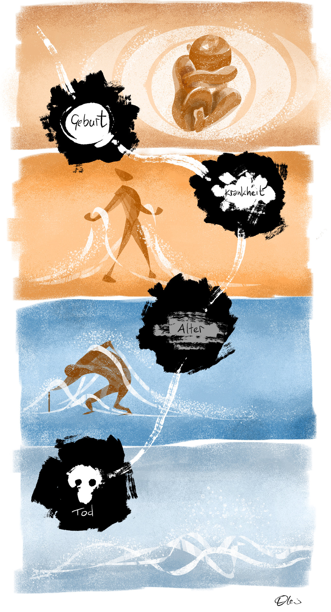

Buddhas Metaphysik wird im allgemeinen mit den 4 Wahrheiten ausbuchstabiert, die zugleich eine tiefe psychologische Wahrheit ausdrücken: Leben ist Leiden. Doch damit nimmt die buddhistische Philosophie erst ihren Anfang. Zudem ist "Leiden" eine Übsersetzung von "dukkha", was eher Bewegtheit bedeutet, besser vielleicht: Getriebenheit.
